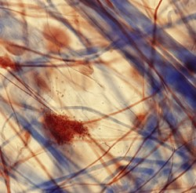
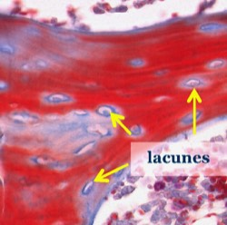
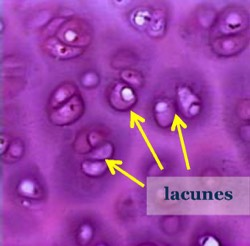

Onderscheid tussen bindweefsel s.s. – kraakbeen - beenweefsel
Onderscheid tussen bindweefsel s.s., kraakbeen en botweefsel maak je op basis van de morfologische kenmerken
van de extracellulaire matrix.
De morfologische kenmerken en dus de eigenschappen van de matrix bepalen of we te maken hebben met bindweefsel ss, kraakbeen of beenweefsel.
Bij bindweefsel s.s. is de extracellulaire matrix zacht. Op coupes zien we meestal duidelijk bindweefselvezels terwijl de grondsubstantie en weefselvloeistof zorgen voor een bleke achtergrond. De cellen liggen schijnbaar willekeurig verspreid in de matrix waarbinnen ze min of meer vrij kunnen bewegen.
Wanneer de matrix verhard is, hebben we te maken met kraakbeen of beenweefsel. Bij het fixeren en inbedden tijdens het maken van lichtmicroscopische coupes krimpen de aanwezige kraakbeencellen of botcellen meer dan de harde matrix zodat zichtbaar wordt dat ze in kleine holtes of lacunes (lacunae) liggen. De cellen lijken hierdoor mooi ‘afgelijnd’ te zijn.
Bij bindweefsel s.s. is de extracellulaire matrix zacht. Op coupes zien we meestal duidelijk bindweefselvezels terwijl de grondsubstantie en weefselvloeistof zorgen voor een bleke achtergrond. De cellen liggen schijnbaar willekeurig verspreid in de matrix waarbinnen ze min of meer vrij kunnen bewegen.
Wanneer de matrix verhard is, hebben we te maken met kraakbeen of beenweefsel. Bij het fixeren en inbedden tijdens het maken van lichtmicroscopische coupes krimpen de aanwezige kraakbeencellen of botcellen meer dan de harde matrix zodat zichtbaar wordt dat ze in kleine holtes of lacunes (lacunae) liggen. De cellen lijken hierdoor mooi ‘afgelijnd’ te zijn.

Zachte extracellulaire matrix.
Geen lacunes!
Bindweefsel s.s.

Harde extracellulaire matrix.
Beenweefsel

Harde extracellulaire matrix.
Kraakbeen
Vordering bindweefsel algemeen: